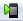
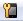
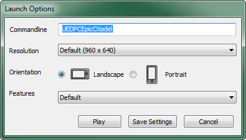
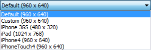
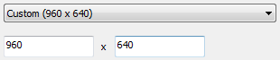
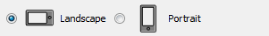

UDN
Search public documentation:
MobilePreviewer
日本語訳
中国翻译
한국어
Interested in the Unreal Engine?
Visit the Unreal Technology site.
Looking for jobs and company info?
Check out the Epic games site.
Questions about support via UDN?
Contact the UDN Staff
中国翻译
한국어
Interested in the Unreal Engine?
Visit the Unreal Technology site.
Looking for jobs and company info?
Check out the Epic games site.
Questions about support via UDN?
Contact the UDN Staff
UE3 Home > Mobile Home > Mobile Previewer
Mobile Previewer
Overview
Accessing the Mobile Previewer
Mobile Previewer In Editor
The easiest way to quickly load a level in the Mobile Previewer is to click the  button on the editor's main tool bar. This will launch the Mobile Previewer so you can play the currently-loaded map.Editor Previewer Settings
Right-clicking the button or clicking the  button will open the Mobile Previewer Settings window.  Commandline - The name of the map to load in the Mobile Previewer. This must match the name of the loaded map (with the 'UEDPC' prefix) and should not be modified. Resolution - Sets the resolution of the Mobile Previewer window from a selection of predefined options | Options | Resolution | Description |
|---|---|---|
| Default | 960x640 | Sets the resolution of the Mobile Previewer to 960x640 and sets the Features to Default. |
| Custom | Configurable | Sets the resolution of the Mobile Previewer to values entered in the text fields and sets the Features to Default.  |
| iPhone 3GS | 480x320 | Sets the resolution of the Mobile Previewer to 480x320 and sets the Features to iPhone 3GS. |
| iPad | 1024x768 | Sets the resolution of the Mobile Previewer to 1024x768 and sets the Features to iPad. |
| iPhone4 | 960x640 | Sets the resolution of the Mobile Previewer to 960x640 and sets the Features to iPhone4. |
| iPhoneTouch4 | 960x640 | Sets the resolution of the Mobile Previewer to 960x640 and sets the Features to iPhoneTouch4. |
Width x Height or Height x Width.

| Option | Description |
|---|---|
| Landscape | Resolution is interpreted as Width x Height. |
| Portrait | Resolution is interprested as Height x Width. |
Mobile Previewer in Standalone
Launching the game with the '-simmobile' command line argument will activate the ES2 renderer along with other mobile-related features, such as touch-based input emulation. If you only want the ES2 renderer, but no other emulation features, you can pass the '-es2' command line argument to activate the OpenGL ES2 RHI instead of the usual DirectX-based rendering. This uses nearly the exact same code path as your mobile game uses when running on device, so the graphics will appear very similar.Differences Between Previewer and Device
Differences Between Previewer and Editor
- The mobile previewer should be used when you want a more accurate representation of what your game will look like without running on your mobile device. The editor uses Direct3D and not the OpenGL ES2 renderer that mobile devices use. As a result, it cannot display some shading effects such as fog and mobile specular which require the use of OpenGL shaders.
- Debug view modes such as shader complexity, wireframe, unlit, lighting only, and lighting detail are not yet supported with the mobile previewer. If you would like to use these features you should run your game via "Play in Editor" or "Play on PC". Note however that shader complexity may not be accurate as the mobile previewer does not use the same shaders as the editor.